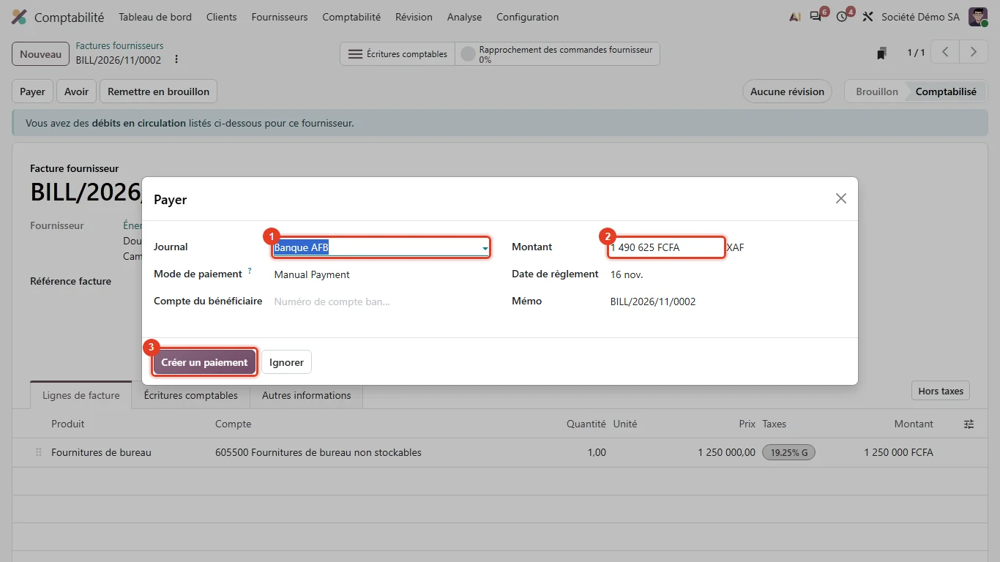
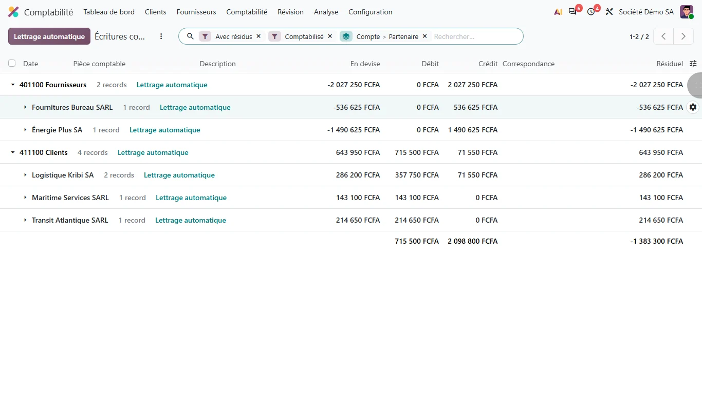

Payer un fournisseur et lettrer
Objectif. Régler une facture fournisseur et la solder.
Menu Odoo 15Comptabilité > Fournisseurs > Factures (Enregistrer un paiement)
Étapes
- Ouvrez la facture confirmée et cliquez sur Enregistrer un paiement.
- Choisissez le journal (1) de la banque ou de la caisse qui paie.
- Vérifiez le montant (2) et la date, puis Créer un paiement (3).
- La facture passe à « Payé » ; contrôlez au rapprochement bancaire.


À vérifier
- Chaque paiement fournisseur est rattaché à sa facture.
À éviter
- Ne payez pas une facture non validée par le responsable.
Exercice
Payez une facture fournisseur par banque.